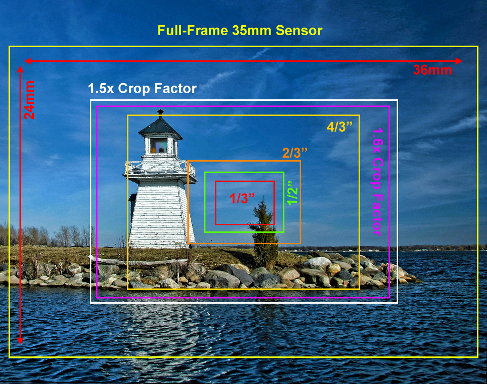

A DSLR also called Digital SLR or Digital Single-Lens Reflex camera works exactly like a single-lens reflex camera with a digital image processor instead of a photographic film. The reflex design is the main difference between DSLR and other digital cameras like Mirrorless cameras.
In the reflex design, the light travels through the lens then to a mirror which alternates to send the image to either viewfinder or the image sensor. Earlier the traditional cameras would have a viewfinder with it's lens, hence, the term single-lens for this design. Mirrorless cameras would not have a mirror between the lens and image sensor or viewfinder. The absence of mirror makes them smaller in size and slightly better for low-light photography.
The DSLRs are usually categorised based on the size of the image sensor. The two main categories of them are:
"Full-frame" image sensors are same size as 35 mm film(36 X 24 mm). Because of larger sensor, full-frame cameras tend to be bulky. Even the mirrorless cameras which doesn't have a mirror are still bigger in size to fit the larger lenses to project the image on to the bigger sensor. And it's also expensive to manufacture a full frame sensor, hence, full frame DSLRs are not budget friendly.
Crop-frame sensors are usually in dimensions, 22.2 X 14.8 mm more or less. Because of the smaller sensor, they are compact and easy to carry. Industries manufacture much more smaller sensors than crop-frame such as Foven, micro four thirds etc.,
Crop-frames have more or less 1.5X crop factor. It means a lens of 24 mm focal length becomes a 36 mm on crop-sensor bodies. The crop factor could be useful in the fields like Wild photography, Macro photography etc., But unlike full-frame they are not good options for low-light photography and they don't produce bokeh as good as a full-frame body.
If you are a beginner photographer or just want to take candid pictures at parties and functions, I would suggest a crop-frame DSLR or even smaller than crop sensor. Crop sensor bodies are more than enough for hobbyists. Learn photography concepts like framing and lighting and get skilled. Even then I strongly insist you to invest money in lenses and lighting equipment not in buying a bigger sensored body.
But if you want to be in fashion, wedding business, real-estate or professionally sell your work in the market, then yes, by all means buy a full frame DSLR, decent glass(lens) and better lighting equipment. The camera and accessories are just tools and they don't make you a great photographer just because you own them. You still need to learn concepts, practise and get skilled.
Always remember, the best camera you could have is the one you have at the moment of capture.